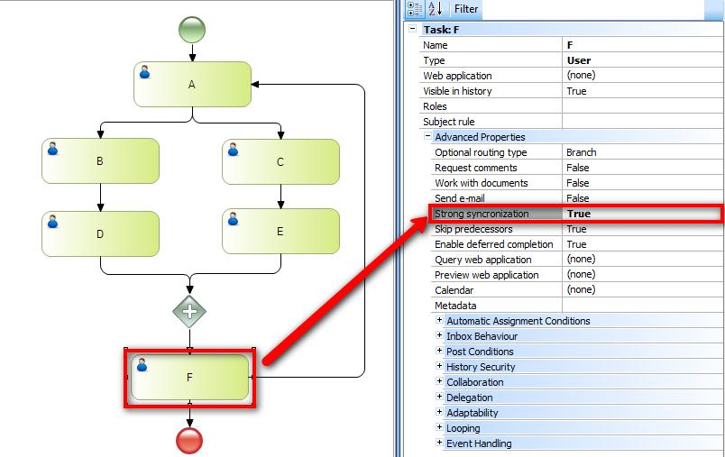

It is useful when the task has and-join predecessors. It demands the same number of instances in each one of the synchronized tasks. ValuesTrue Default: False Example E.g.: you start synchronizing from A. In task F you return to task A. B and C are created. C and E are completed. B remains in execution. Parallel Gateway will find: - An E instance (created in the 2nd Execution) - A D instance (created in the 1st execution) - It will assume the tasks as synchronized and will create the F instance. ‘Strong synchronization’ demands the existence of the same number of instances for each one of the synchronized tasks. In this case, to create the F task in the second synchronization, it will demand the existence of two instances for D and E. ScopeObjects: Tasks
|
| Backlinks | ||
| Interactive Activity Properties | Script Task Properties | User Task Properties |